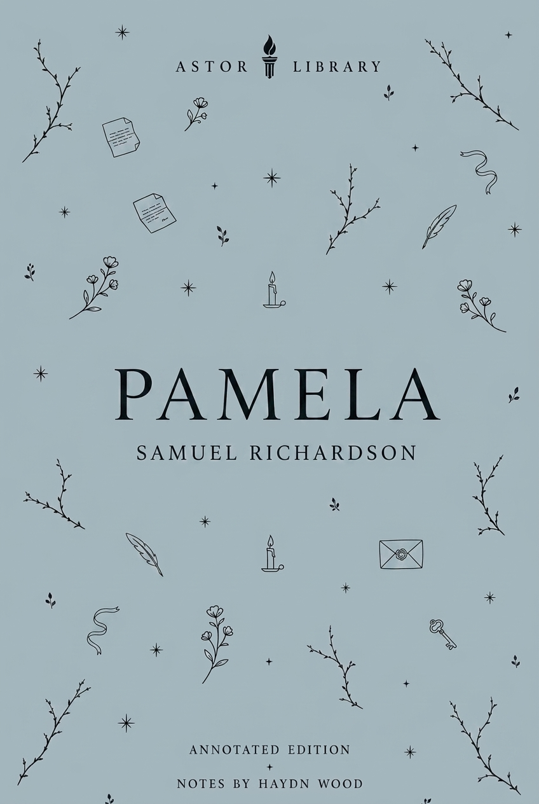

Richardson’s 1740 novel makes private letters the ground of a struggle over sex, class and power. Trace its publication, fierce controversy, parodies and visual afterlife.
1740First published anonymously in London, with the title page dated 1741.
LettersPamela writes first to her parents, then in journal form during confinement.
1741Shamela and The Anti-Pamela quickly answered Richardson’s novel.
c. 1744Joseph Highmore painted a twelve-scene Pamela series.

Astor Library edition
Pamela; or, Virtue Rewarded, Samuel Richardson
Pamela Andrews is a fifteen-year-old maidservant whose mistress has died. When her new master, Mr B, begins pursuing her, Pamela records the danger in letters and journal entries addressed to her parents.
The novel follows her resistance, confinement, moral argument and eventual rise, while raising difficult questions about virtue, power, class, consent and reward. Its difficulty is part of its historical importance: Richardson asks readers to admire Pamela’s virtue, but the plot also exposes how little protection a servant has when household power, class privilege and sexual threat converge.
Anonymous first publication Richardson did not initially publish the novel under his name.
Title-page date The first edition appeared in November 1740 but is dated 1741 on the title page.
Epistolary method Pamela’s writing creates immediacy: events are recorded as pressure, fear and persuasion unfold.
Servant status The central crisis depends on Pamela’s vulnerability as a young maidservant in a wealthy household.
Immediate controversy Readers argued over whether Pamela was a model of virtue, a social climber, or both.
Cultural afterlife The novel produced parodies, sequels, paintings, engravings, stage versions and Pamela-themed goods.
Text and publication
Pamela belongs to print culture as much as to fiction history: it is a novel built from letters, advertised as moral instruction and immediately absorbed into controversy.
First edition title page of Pamela; or, Virtue Rewarded. Published anonymously, London, 1740, title page dated 1741. Public-domain image via Wikimedia Commons.
1740 / 1741
First edition
Published anonymously by C. Rivington and J. Osborn.
The first edition appeared late in 1740, though the title page carries the date 1741.
The subtitle, Virtue Rewarded, presents the book as a moral narrative, as well as an entertainment.
The title page already frames the book as familiar letters from a young woman to her parents.
Samuel Richardson, portrait by Joseph Highmore, c. 1750. National Portrait Gallery / public-domain image via Wikimedia Commons.
1689-1761
Richardson: printer turned novelist
Richardson was a printer and publisher before becoming a novelist.
Pamela grew out of a project connected to model letters and moral instruction.
His trade matters: the novel is alert to writing, copying, interception, publication and the authority of documents.
1741-1761
Revisions and sequels
Richardson revised Pamela across later editions.
Pamela in her Exalted Condition continued the story after marriage.
Later editorial work often has to choose between the urgency of the first edition and Richardson’s later revisions.
Epistolary form
The story is not merely told in letters. The writing is part of the action: Pamela writes under pressure, hides papers, records threat and tries to preserve a version of herself that others cannot control.
Plate from the 1742 deluxe edition, showing Mr B intercepting Pamela’s first letter home. Public-domain image via Wikimedia Commons.
Letter I image record
Letters as evidence and danger
Pamela’s letters are addressed to her parents, but they also become evidence for the reader.
Mr B’s attempts to intercept or control her writing show that letters have power inside the plot.
The image visualises one of the novel’s central questions: who has the right to read a servant girl’s private account?
Letters
Writing to parents
At first, Pamela writes to her father and mother from the Bedfordshire household.
The family addressee gives the early letters a moral and emotional frame.
The parents are not just recipients: they help define Pamela’s sense of duty, fear and reputation.
Journal
Writing during confinement
When Pamela is removed to Lincolnshire, the letters shift into a journal-like record.
That change matters because she cannot be sure the writing will reach anyone.
The form makes confinement feel immediate: the reader is trapped inside uncertainty with her.
Power, class and consent
The novel’s central conflict cannot be separated from household hierarchy. Mr B has gendered, economic and social power; Pamela’s writing is one of the few tools available to her.
Pamela Andrews
Servant, daughter, writer
Pamela is fifteen, poor and dependent on employment.
Her insistence on virtue is also an insistence that her body and reputation are not household property.
Her letters repeatedly show the difficulty of defending oneself when every route of escape depends on someone more powerful.
Mr B
Master and pursuer
Mr B’s pursuit is inseparable from rank.
His household authority gives him access, secrecy and the ability to command servants such as Mrs Jewkes.
Modern readers often find the marriage plot disturbing because it seems to reward the man whose power created the danger.
Illustration from a 1741 pirated edition of Pamela. Public-domain image via Wikimedia Commons / Houghton Library record.
1741 pirated edition
Fast circulation and unstable control
The speed of unauthorised editions shows how quickly Pamela became market property.
The novel is obsessed with control of writing, but its own publication history shows writing escaping control.
That tension makes the book a strong record of eighteenth-century print culture.
Pamela in art
Joseph Highmore’s paintings were early visual adaptations, made after the novel became a publishing sensation rather than for its first edition.
Joseph Highmore, Mr B. Finds Pamela Writing, from the Pamela series, c. 1744. Tate Britain / public-domain image via Wikimedia Commons.
c. 1744
Mr B finds Pamela writing
Highmore turns the act of writing into a staged confrontation.
Pamela’s letter becomes both moral defence and exposed document.
The image makes visible what the epistolary form repeatedly dramatises: privacy under pressure.
Joseph Highmore, Pamela in the Bedroom with Mrs Jewkes and Mr B., from the Pamela series, c. 1744. Tate Britain / public-domain image via Wikimedia Commons.
c. 1744
Bedroom threat
This scene records the novel’s most disturbing household danger: the bedroom is not private or safe.
Mrs Jewkes’s role matters because coercion is enforced through the household system, not only by Mr B directly.
The painting shows why modern readings often focus on consent and confinement rather than simple moral uplift.
Joseph Highmore, Pamela is Married, from the Pamela series, c. 1744. Tate Britain / public-domain image via Wikimedia Commons.
c. 1744
Marriage and reward
Marriage is the novel’s declared reward, but it is also the point at which the plot becomes most difficult to interpret.
Is Pamela’s rise a moral victory, a class fantasy, a compromise, or a troubling accommodation to power?
The fact that Highmore painted a whole narrative cycle shows how quickly readers wanted to see the novel as a sequence of recognisable scenes.
Controversy, parody and marketplace
Pamela did not simply succeed; it provoked argument. The novel’s popularity generated praise, suspicion, parodies and competing rewritings almost immediately.
1741
Fielding’s Shamela
Published under the name Mr Conny Keyber.
Shamela turns Pamela into a calculating social climber and mocks Richardson’s moral machinery.
Fielding targets both the heroine’s supposed virtue and the culture of praise around the novel.
1741
Haywood’s The Anti-Pamela
Eliza Haywood’s response also attacks the Pamela model of feigned innocence and social ascent.
Its subtitle, Feign’d Innocence Detected, makes the critique explicit.
Placed beside Richardson, Haywood shows how contested female virtue and self-presentation were in the marketplace.
1742
Joseph Andrews
Fielding’s later comic novel begins from the idea of Pamela’s brother Joseph defending his chastity.
It moves beyond direct parody into a broader comic theory of novel-writing.
Pamela therefore helps generate one of the major alternative lines of eighteenth-century fiction.
Timeline
The novel, its author and its earliest responses.
1689
Samuel Richardson baptised
Richardson was baptised on 19 August 1689.
His working life as printer and letter-writer shaped the formal intelligence of Pamela.
1740
Pamela first published
First published anonymously in London.
The title page is dated 1741, a common point modern editions clarify.
1741
Parody and continuation
Shamela and The Anti-Pamela appeared in the same controversy cycle.
Richardson also published Pamela in her Exalted Condition.
c. 1744
Highmore’s Pamela series
Joseph Highmore painted twelve scenes based on the novel.
The series was later divided between Tate Britain, the Fitzwilliam Museum and the National Gallery of Victoria.
1761
Richardson dies
Richardson died on 4 July 1761.
By then he had published Clarissa and Sir Charles Grandison as well as Pamela.
On stage and screen
The story moved quickly into theatre, opera and European adaptation. Later versions often recast its moral difficulty as melodrama, seduction plot or class romance.
1740s
Early performance culture
Pamela became a theatrical and visual subject soon after publication.
Its scenes were easy to translate into staged confrontations: intercepted letters, attempted escape, confinement, Lady Davers and marriage.
The speed of adaptation shows the novel working as public culture, not just private reading.
1760
La buona figliuola
Niccolò Piccinni’s opera, with libretto by Carlo Goldoni, belongs to the European Pamela afterlife.
The title is often translated as The Good-Natured Girl.
It demonstrates how Richardson’s plot could travel into comic opera and continental performance traditions.
1973 / 2000s
Screen and television echoes
Mistress Pamela appeared as a 1973 film adaptation.
Later television melodrama, including Elisa di Rivombrosa, draws indirectly on the Pamela pattern of class difference, virtue, danger and social ascent.
Modern afterlives tend to reveal the tension between romance plot and coercive power more sharply than eighteenth-century moral framing did.